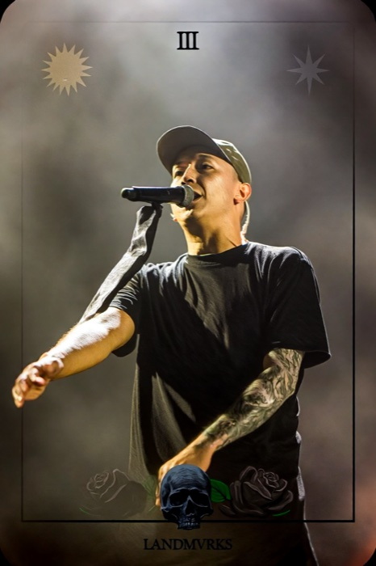

Projet en gestation — document de travail
Le classeur Panini du metal et du rock, réinventé pour une génération qui vit sa passion en ligne comme en fosse.
Ce document explique où en est l'idée : la vision, comment le jeu fonctionnerait, ce qui nous excite, et ce qui nous fait encore hésiter. Pas de jargon technique — on veut votre avis de fans avant d'aller plus loin.
Le constat
Il y a vingt ans, compléter l'album Panini de sa équipe, c'était une obsession partagée : on échangeait dans la cour, on avait "les doubles", on montrait sa collection avec fierté. La musique metal et rock a la même culture de la fidélité et du fanatisme — mais aucun objet de collection à sa mesure aujourd'hui.
Metalnini part de ce manque : donner à une communauté très soudée, souvent qualifiée de "nerd" (et on l'assume), un objet à collectionner, à montrer, à s'échanger — construit autour des artistes qu'elle suit vraiment.
Le concept
Une appli où tu ouvres des paquets de cartes d'artistes metal/rock, tu construis ta collection, et tes cartes évoluent avec la vraie actu des groupes — le tout sans jamais pouvoir acheter la victoire.
Pense "Panini" pour l'objet, "Pokémon" pour l'envie de compléter et de voir grandir sa collection dans le temps — appliqué à un univers musical qu'aucune de ces références ne couvre.
Le ton qu'on vise : humour, fun, moderne, gamifié — assumé comme un jeu, pas comme une simulation sérieuse. Pour l'instant, on teste directement avec les vrais noms et de vraies inspirations visuelles (voir plus bas), tant que ça reste un usage privé — la question des droits reste à régler avant toute sortie publique.
La mécanique
La boucle de base, pensée pour rester simple à comprendre dès la première ouverture :
Un paquet gratuit régulier, ou payant, ou gagné lors d'un concert.
Ranger les cartes par artiste, par style, par festival, ou même par musicien — voir sa progression.
Une carte change quand l'artiste sort un album, un clip, ou joue près de chez toi.
Un doublon se propose en échange à d'autres fans — jamais contre de l'argent.
Les cartes
Chaque carte suit un même gabarit visuel — seule la rareté change le traitement (bordure, texture, effet). Ça permet d'en produire beaucoup, tout en gardant un objet cohérent et reconnaissable.
Exemple avec le vrai nom du groupe (Landmvrks) — voir plus bas pour un vrai test visuel dans le même esprit.

Premier vrai test de direction visuelle (pas qu'une maquette de couleurs) : cadre façon tarot vintage, gravure à l'ancienne, humour porté par le jeu de mots et le détail visuel plutôt que par l'exagération. Fait avec le vrai nom du groupe (Landmvrks) et un portrait qui recherche la ressemblance avec le chanteur, à partir d'une photo réelle. Direction en cours de test, pas encore figée, et diffusée ici uniquement parce que cette page reste un usage privé entre proches.
Les classeurs
Chaque membre d'un groupe a aussi sa propre carte, avec son instrument — un batteur ou un bassiste que tu suis à travers plusieurs groupes devient une collection à part entière, transversale à tous ses groupes.
Finir un classeur (par artiste, par style...) débloque une récompense garantie, jamais du hasard — juste la reconnaissance d'avoir fini. Et en plus des classeurs officiels, tu peux te construire les tiens, à ta sauce, pour montrer ce que tu veux mettre en avant sur ton profil.
L'évolution
Le point qu'on veut vraiment réussir : ne pas faire revenir les gens avec des comptes à rebours bidons ("plus que 2h !"). À la place, une carte évolue quand quelque chose de vrai se passe chez l'artiste.
Exemple : tu as la carte "Iron Wraith" de base. Le groupe sort un nouvel album → ta carte se transforme, avec la pochette, en édition limitée dans le temps. Tu étais au concert de la tournée ? Une variante spéciale de cette date se débloque, rien qu'à toi.
Le terrain
À côté des cartes d'artistes, un deuxième fil : ton propre avatar de fan, qui évolue avec ta collection, ton vécu live, et le type de spectateur que tu es. Un carnet de concerts, une note d'ambiance après le show, et des titres qui racontent qui tu es — sur le terrain comme dans ta collection.
Même si tu as fini de collectionner un artiste, ton avatar te donne toujours une raison d'ouvrir l'appli après un concert.
La rencontre
Au moment du check-in, tu peux choisir de te rendre visible aux autres fans présents ce soir-là — seulement si eux aussi ont fait la même démarche. Depuis cette liste éphémère, tu peux proposer un échange en direct, sans repasser par une recherche globale.
Première rencontre confirmée avec quelqu'un à un concert ? Une carte bonus garantie, et ton titre "Metal Corner" avance pour de vrai. Rien d'automatique ni de visible par défaut — ça reste toi qui décides de te montrer, et seulement à ceux qui font la même démarche.
Le collectif
Le troc se fait carte contre carte, entre fans — jamais contre de l'argent réel. On veut éviter à tout prix l'effet "marché" qui a fini par abîmer d'autres jeux de cartes à collectionner.
Des groupes par sous-genre (le fan de black metal norvégien et celui de nu-metal n'ont pas la même culture) permettent de se retrouver entre gens qui se comprennent, avec leurs propres classements internes.
Plus tard
Des paquets physiques en vrai, avec un QR code qui débloque la version numérique — pour l'instant on reste 100% digital, le temps de valider le concept.
Des bornes en festival pour débloquer des cartes exclusives sur place, en plus du système de base par géolocalisation.
Des rencontres facilitées entre fans présents au même concert.
Une vraie solution sur les droits (accords de licence avec labels/artistes, ou autre approche) avant toute ouverture publique — vrais noms et portraits ressemblants restent un usage privé pour l'instant.
Ce qui nous inquiète
On a besoin de vous
Réponds à ce que tu veux, ignore le reste. Ça part directement par mail — pas besoin de créer de compte.